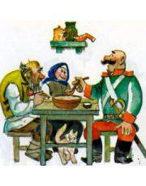

Логотип
HOT PELMEN
Русская народная сказка солдат и пельмень
Шел солдат со службы домой. Дорогой выпросился ночевать. Вечером хозяева стали пельмени стряпать. Старик хозяин сидит на лавке. Сел солдат рядом и завел разговор: — Видно, поедим, дедушка? — Поедим, да не все! — отвечает старик. — А ты разве не хочешь? — спрашивает солдат. Сели хозяева ужинать, посадили за стол и солдата. Они делят пельмени вилкой надвое, обмакивают в уксус и едят, закусывают хлебом. А солдат вилкой пельмень ткнет — и в рот. Не вытерпел старик: — Ты, солдат, двой! Солдат будто не понял: давай по два пельменя поддевать на вилку. Старик говорит: — Ешь по-старому!